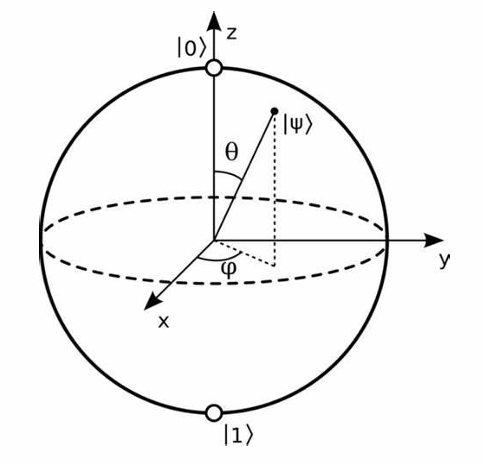
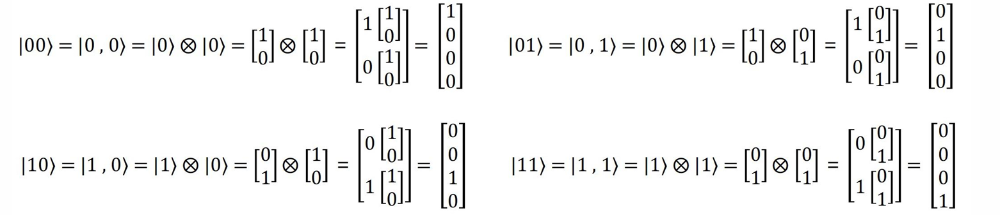
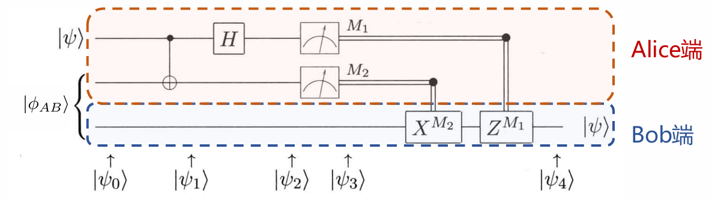
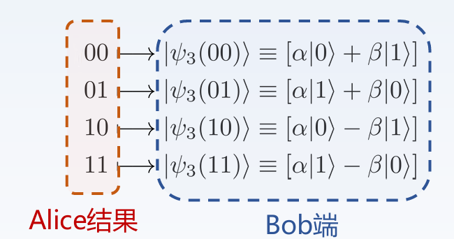
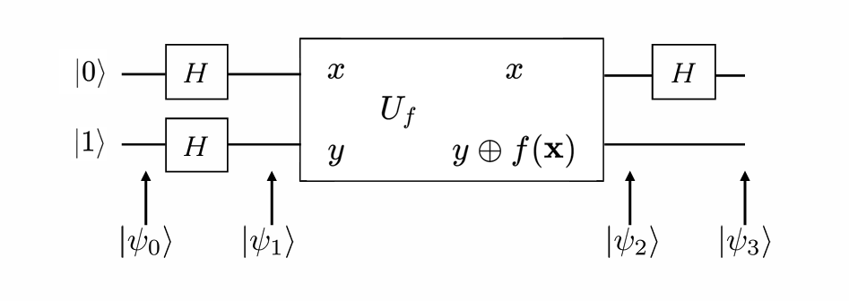

Chapter1 量子比特与量子门
量子术语
| 量子术语 | 线代术语 |
|---|---|
| 态矢量 | 向量 |
| 本征态 | 特征向量 |
| 本征值 | 特征值 |
| 右矢 $|a\rangle$ | 列向量 |
| 左矢 $\langle a|$ | 行向量 |
| 基态 | 对应最小特征值的特征向量 |
| 算符 | 矩阵 |
| 幺正算符 | 幺正矩阵（$A^{\dagger}=A^{-1}$，$A^{\dagger}$ 表示共轭转置矩阵） |
| 厄米算符 | 自伴矩阵（$A^{\dagger}=A$） |
在量子计算中，所有涉及的算符均为幺正算符。
单量子比特
量子态基础
量子比特是状态的线性组合，被称为叠加态：
$$|\psi\rangle = \alpha|0\rangle + \beta|1\rangle$$
- $\alpha$ 和 $\beta$ 为复系数，又称振幅
- $|0\rangle$ 和 $|1\rangle$ 为该叠加态的基矢态，是一组单位正交基，任意两个单位正交基都可以作为基矢态
如果用坐标表示（又称 bra-ket 表示法），那么
$$|0\rangle=\begin{bmatrix} 1 \\ 0 \end{bmatrix}$$
$$|1\rangle=\begin{bmatrix} 0 \\ 1 \end{bmatrix}$$
$$|\psi\rangle=\begin{bmatrix} \alpha \\ \beta \end{bmatrix}$$
如果对 $|\psi\rangle$ 进行测量，则会有 $|\alpha|^2$ 的概率得到 $0$ 态，$|\beta|^2$ 的概率得到 $1$ 态。因此，存在归一化条件：
$$|\alpha|^2 + |\beta|^2 = 1$$
Bloch 球表示法
单量子比特的量子态可以可视化在一个称为 Bloch 球的表面上。给定量子态：
$$|\psi\rangle=c_0|0\rangle + c_1|1\rangle$$
通过欧拉公式可以改写两个复系数，得到
$$|\psi\rangle=r_0e^{i\varphi_0}|0\rangle + r_1e^{i\varphi_1}|1\rangle$$
我们有结论：若 $|e^{i\varphi}|=1$，则 $|\psi\rangle=e^{i\varphi}|\psi\rangle$。因此，上式可以直接提出一个 $e^{i\varphi_0}$ 并扔掉，并记 $\varphi=\varphi_1-\varphi_0$，得到
$$|\psi\rangle=r_0|0\rangle + r_1e^{i\varphi}|1\rangle$$
考虑到归一化条件，可以进一步改写为
$$|\psi\rangle=\cos(\frac{\theta}{2})|0\rangle+e^{i\varphi}\sin(\frac{\theta}{2})|1\rangle$$
综上，对于每一个 $|\psi\rangle$，最终都可以找到唯一的一对 $(\theta,\varphi)$ 来描述。因此，可以将其放到一个球面上，其三维坐标为
$$\begin{cases} x=\sin\theta\cos\varphi \\ y=\sin\theta\sin\varphi \\ z=\cos\theta \end{cases}$$

多量子比特
考虑双量子比特：
$$|\psi\rangle=\alpha_{00}|00\rangle + \alpha_{01}|01\rangle + \alpha_{10}|10\rangle + \alpha_{11}|11\rangle$$
$$|\alpha_{00}|^2+|\alpha_{01}|^2+|\alpha_{10}|^2+|\alpha_{11}|^2=1$$
张量积（克罗内克积）
$$V\otimes W$$
Example
$$ \begin{bmatrix} 1 & 2 \end{bmatrix}\otimes \begin{bmatrix} 1 & 2 \\ 3 & 4 \end{bmatrix}= \begin{bmatrix} 1\cdot\begin{bmatrix} 1 & 2 \\ 3 & 4 \end{bmatrix} & 2\cdot\begin{bmatrix} 1 & 2 \\ 3 & 4 \end{bmatrix} \end{bmatrix}= \begin{bmatrix} 1 & 2 & 2 & 4 \\ 3 & 4 & 6 & 8 \end{bmatrix} $$
张量积可用于获得多个量子态的复合量子态：

更一般地：
$$|\psi\rangle=\alpha|0\rangle + \beta|1\rangle$$
$$|\phi\rangle=\gamma|0\rangle + \delta|1\rangle$$
$$ \begin{align} |\psi\phi\rangle=|\psi\rangle \otimes |\phi\rangle & =\alpha\gamma(|0\rangle\otimes|0\rangle)+\alpha\delta(|0\rangle\otimes|1\rangle)+\beta\gamma(|1\rangle\otimes|0\rangle)+\beta\delta(|1\rangle\otimes|1\rangle) \\ & =\alpha\gamma|00\rangle + \alpha\delta|01\rangle + \beta\gamma|10\rangle + \beta\delta|11\rangle \end{align}$$
纠缠态
若一个复合量子态不能表示为各个量子态的张量积形式，则称该复合量子态为纠缠态。
贝尔态：
贝尔态是双量子比特中重要的纠缠态：
$$|\phi^+\rangle=\frac{1}{\sqrt{2}}(|00\rangle + |11\rangle)$$
$$|\phi^-\rangle=\frac{1}{\sqrt{2}}(|00\rangle - |11\rangle)$$
$$|\psi^+\rangle=\frac{1}{\sqrt{2}}(|01\rangle + |10\rangle)$$
$$|\psi^-\rangle=\frac{1}{\sqrt{2}}(|01\rangle - |10\rangle)$$
单量子门
量子非门（X 门）
互换复系数：
$$X=\begin{bmatrix} 0 & 1 \\ 1 & 0 \end{bmatrix}$$
除了 X 门， 还有 Y 门和 Z 门：
$$Y=\begin{bmatrix} 0 & -i \\ i & 0 \end{bmatrix}$$
$$Z=\begin{bmatrix} 1 & 0 \\ 0 & -1 \end{bmatrix}$$
这三个门统称为 Pauli 门，在 Bloch 球上分别对应绕 $x$ 轴、$y$ 轴和 $z$ 轴旋转 $\pi$ 的角度。
Hadamard 门（H 门）
将 $|0\rangle$ 和 $|1\rangle$ 转变为叠加态：
$$ H=\frac{1}{\sqrt{2}} \begin{bmatrix} 1 & 1 \\ 1 & -1 \end{bmatrix}$$
$$H|0\rangle=\frac{1}{\sqrt{2}}(|0\rangle+|1\rangle)$$
$$H|1\rangle=\frac{1}{\sqrt{2}}(|0\rangle-|1\rangle)$$
相位旋转门
改变量子态的相对相位，但不改变其概率分布。常见的相位旋转门有 P 门：
$$P=\begin{bmatrix} 1 & 0 \\ 0 & e^{i\phi} \end{bmatrix}$$
在 Bloch 球上对应绕 $z$ 轴旋转 $\phi$ 的角度。
P 门的两个特例是 S 门（$\phi=\frac{\pi}{2}$）和 T 门（$\phi=\frac{\pi}{4}$）：
$$S=\begin{bmatrix} 1 & 0 \\ 0 & i \end{bmatrix}$$
$$T=\begin{bmatrix} 1 & 0 \\ 0 & e^{i\frac{\pi}{4}} \end{bmatrix}$$
参数旋转门
绕对应轴旋转 $\theta$ 的角度：
$$R_X(\theta)=\begin{bmatrix} \cos(\frac{\theta}{2}), & -i\sin(\frac{\theta}{2}) \\ -i\sin(\frac{\theta}{2}), & \cos(\frac{\theta}{2}) \end{bmatrix}$$
$$R_Y(\theta)=\begin{bmatrix} \cos(\frac{\theta}{2}), & -\sin(\frac{\theta}{2}) \\ \sin(\frac{\theta}{2}), & \cos(\frac{\theta}{2}) \end{bmatrix}$$
$$R_Z(\theta)=\begin{bmatrix} e^{-i\frac{\theta}{2}}, & 0 \\ 0, & e^{i\frac{\theta}{2}} \end{bmatrix}$$
多量子门
在多量子比特的情况下，可以将多个单量子门视作一个整体，通过张量积得到总体的多量子门。
Note
若出现有的量子比特没有进行操作的情况，可以在对应位置使用单位矩阵 I 来表示。
CNOT 门
CNOT 门是一种受控门，第一个量子比特（控制比特）的状态决定了第二个量子比特（目标比特）是否翻转。若前者为 $|1\rangle$，则后者翻转；若前者为 $|0\rangle$，则后者保持不变。前者一直保持不变。
$$CNOT=\begin{bmatrix} 1 & 0 & 0 & 0 \\ 0 & 1 & 0 & 0 \\ 0 & 0 & 0 & 1 \\ 0 & 0 & 1 & 0 \end{bmatrix}$$
若
$$|\psi\rangle=\begin{bmatrix} \alpha_{00} \\ \alpha_{01} \\ \alpha_{10} \\ \alpha_{11} \end{bmatrix}$$
则
$$CNOT|\psi\rangle=\begin{bmatrix} \alpha_{00} \\ \alpha_{01} \\ \alpha_{11} \\ \alpha_{10} \end{bmatrix}$$
由于CNOT 门无法拆解成矩阵的张量积形式，因此它常用于制备纠缠态。
量子隐形传态
问题描述：
Alice 和 Bob 各自有一个量子比特，这一对量子比特处于贝尔态：
$$|\phi_{AB}\rangle=\frac{1}{\sqrt{2}}|00\rangle+\frac{1}{\sqrt{2}}|11\rangle$$
现在，Alice 还有一个量子比特 $|\psi\rangle=\alpha|0\rangle+\beta|1\rangle$，她想把这个量子态传送给 Bob，应该如何传送？（不能直接观测，否则会坍缩）
解决方法：
构造如下图所示的量子电路：

初始状态：
$$|\psi_0\rangle=\frac{\alpha}{\sqrt{2}}|0\rangle(|00\rangle+|11\rangle)+\frac{\beta}{\sqrt{2}}|1\rangle(|00\rangle+|11\rangle)$$
Alice 将其要发送的量子比特（控制比特）以及持有的纠缠的量子比特（目标比特）经过 CNOT 门：
$$|\psi_1\rangle=\frac{\alpha}{\sqrt{2}}|0\rangle(|00\rangle+|11\rangle)+\frac{\beta}{\sqrt{2}}|1\rangle(|10\rangle+|01\rangle)$$
Alice 再将要发送的量子比特经过 H 门：
$$ \begin{align} |\psi_2\rangle & =\frac{\alpha}{2}(|0\rangle+|1\rangle)(|00\rangle+|11\rangle)+\frac{\beta}{2}(|0\rangle-|1\rangle)(|10\rangle+|01\rangle) \\ & =\frac{1}{2}[|00\rangle(\alpha|0\rangle+\beta|1\rangle)+|01\rangle(\alpha|1\rangle+\beta|0\rangle)+|10\rangle(\alpha|0\rangle-\beta|1\rangle)+|11\rangle(\alpha|1\rangle-\beta|0\rangle)] \end{align}$$
这个时候，只需要测量 Alice 的两个量子比特，就可以知道 Bob 的量子比特处于哪种状态：

例如，如果 Alice 的两个量子比特测量结果为 $00$，那么 Bob 的量子比特就是原本待传送的量子比特，Bob 不需要做任何事；如果测量结果为 $01$，那么 Bob 需要用 X 门来修正；如果测量结果为 $10$，那么 Bob 需要用 Z 门来修正；如果测量结果为 $11$，那么 Bob 需要用 X 门和 Z 门来修正。
Deutsch 算法
常数函数 & 平衡函数：
- 常数函数：对于所有输入，输出值相同（全部为 $0$ 或全部为 $1$）
- 平衡函数：对于所有输入，输出值有一半为 $0$，另一半为 $1$
问题描述：
若一个函数要么是常数函数，要么是平衡函数，如何通过尽可能少的查询次数来确定该函数的类型？
解决方法：
这里仅考虑最简单的 $f:\{0,1\}\rightarrow\{0,1\}$

初始状态：
$$|\psi_0\rangle=|01\rangle$$
对每个量子比特应用 H 门：
$$|\psi_1\rangle=(\frac{|0\rangle+|1\rangle}{\sqrt{2}})(\frac{|0\rangle-|1\rangle}{\sqrt{2}})$$
然后，通过一个量子黑盒 $U_f$，$U_f$ 的效果为将 $|y\rangle$ 转变为 $|y\rangle\oplus f(x)$，其中，$\oplus$ 表示异或操作。
当 $f(x)=0$ 时
$$|y\oplus f(x)\rangle=\frac{|0\oplus 0\rangle-|1\oplus 0\rangle}{\sqrt{2}}=\frac{|0\rangle-|1\rangle}{\sqrt{2}}$$
当 $f(x)=1$ 时
$$|y\oplus f(x)\rangle=\frac{|0\oplus 1\rangle-|1\oplus 1\rangle}{\sqrt{2}}=-\frac{|0\rangle-|1\rangle}{\sqrt{2}}$$
因此
$$ \begin{align} |\psi_2\rangle & =(\frac{|0\rangle+|1\rangle}{\sqrt{2}})[(-1)^{f(x)}\frac{|0\rangle-|1\rangle}{\sqrt{2}}] \\ & =[\frac{(-1)^{f(0)}|0\rangle+(-1)^{f(1)}|1\rangle}{\sqrt{2}}] (\frac{|0\rangle-|1\rangle}{\sqrt{2}}) \end{align}$$
最后，再对第一个量子比特施加 H 门。
如果 $f(0)=f(1)$（常数函数），则
$$|\psi_3\rangle=\pm|0\rangle(\frac{|0\rangle-|1\rangle}{\sqrt{2}})$$
如果 $f(0)\neq f(1)$（平衡函数），则
$$|\psi_3\rangle=\pm|1\rangle(\frac{|0\rangle-|1\rangle}{\sqrt{2}})$$
也就是说，如果 $f$ 是常数函数，那么测量第一个量子比特的结果一定是 $0$；如果 $f$ 是平衡函数，那么测量结果一定是 $1$。
综上，我们不需要得到 $f(0)$ 和 $f(1)$ 具体是多少，只要知道全局性质即可。经过一次查询，我们就能确定函数的类型。